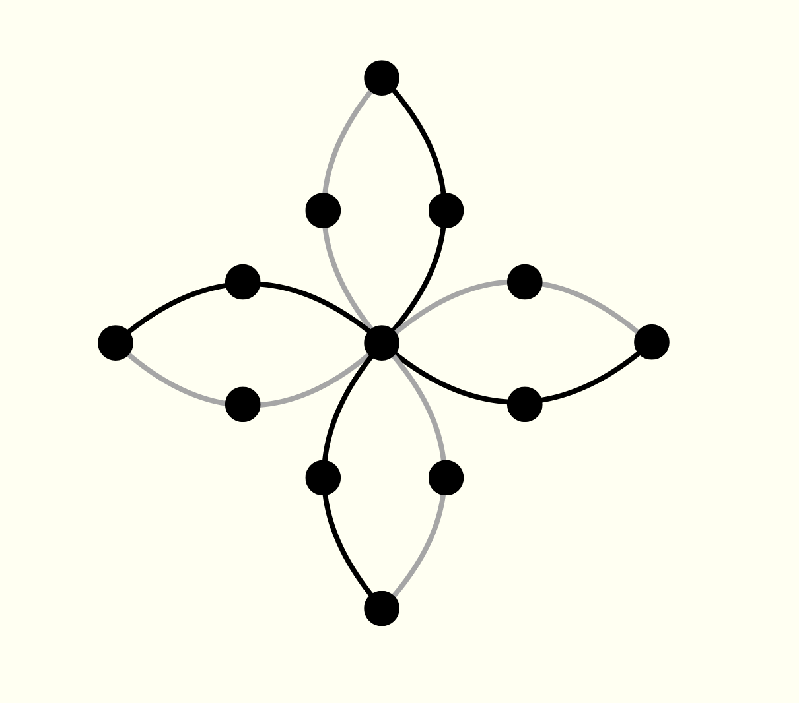
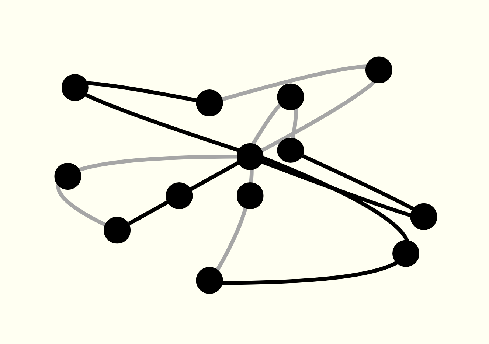

Манифест цифрового пустого пространства
"Узор", представленный этим сайтом, — это один гипертекст, который уподобляет
поэтический текст и цикл узору. По сути, они все могут быть примерами вторичных
сигнификативных систем. Но в то время как считается, что стихотворение организовано
преимущественно языковыми средствами, узоры свободно пользуются языковыми и
экстраязыковыми средствами.
Само взаиморасположение элементов узора устанавливает отношения между ними,
а их множество подготавливает целое вещи. Этим узор идентичен абсолютно любой
структуре и неотличим от расстановки слов в предложении и стихов на белой странице.
Средства электронной литературы изменяют однозначность структур.
Любой промежуток между страницами, соединённых ссылкой,
пустотой и глубиной родственен семантически наполненным
или опустошённым пространствам белого листа
между частями стихотворения — визуального и не.
Ссылка как пустое пространство соединяет, противопоставляет, сравнивает
элементы своей сети.
Но на этом будто всё и заканчивается.
Однако код и художественный гипертекст сами собой образуют, с одной стороны, вторичную
сигнификативную систему, языковую и не, и, с другой стороны, систему обмена ссылками.
Эта вторая система, нейтральная при создании сайта, за счёт "тесноты стихового ряда"
и энтропии семантически нагруженных элементов становится дополнительной сигнификативной системой.
В свою очередь она начинает действовать на значения языковой системы.
Это работает в обе стороны. С одной, нейтральность или сверхсистемность кода превращает
элементы гипертекста в легкочитаемую карту. С другой, разница между текстами, соединёнными
ссылкой, превращает её в оператора сравнения или противопоставления, накладывает отношения
между текстами на пустое и невидимое пространство ссылки.
Всё не останавливается на бинарных оппозициях. Гипертекст объединяет множество элементов
с помощью разных средств в систему. Значение и эффект ссылок теперь определяются не столько
отношениями между парой текстов, но следующими и предыдущими ссылками, а также отдельными
подмножествами, которые образуются этими ссылками в рамках целого.
Эти тексты могут:
исключаться из всего множества,
образовывать свои центры,
формировать поля напряжения и облегчения,
враждующего и скрывающегося сосуществования,
тесного, динамичного и истеричного сближения и соседства
или постоянного тяготения друг к другу,
пусть и с желанием полного разрыва со своей траекторией и всей отягощающей сетью;
прорывать норы ускользания,
создавать напряжение трасценденции
или приковывать себя к двумерности;
натягивать линии связей
или спускать их,
создавать восходящий,
протяжный,
колеблющийся,
смятый ритм или
уничтожать чувство ритма вовсе.
Соответственно, отношения одного элемента к элементам его подмножества, к остальным
подмножествам и некому центру будут непредсказуемы, не определяясь противопоставлением и сравнением.
Характер этих связей напрямую зависит от воображения читателя, поскольку пустое пространство
между частями текста не дано изначально. Его необходимо додумать, ввести, визуализировать
после получения представления о структуре гипертекста, о его подмножествах.
Отождествление гипертекста с узором даёт почувствовать цифровое пространство,
которое никогда не пустовало.
В этом гипертексте "Узор" я попытался дать очень понятную симметричную структуру,
которая в гармоничном виде представлена на первом изображении снизу.
Вокруг центра расположены тройчатки текстов, где серая линия указывает на первый текст,
а чёрная — на последний.
Однако все тексты написаны в похожей манере с тремя приёмами,
которые сформировались при написании этого гипертекста.
Разница в использовании приёмов, их повторении и нарушении,
а также индивидуальные смысловые узлы для каждого подмножества
насыщают цифровое пространство.
Визуализация того, как можно представить пространство отношений между текстами,
их темами и приёмами показана в самом низу страницы.
У каждого приёма есть своя точка притяжения на координатной плоскости.
Наличие тех или иных приёмов, а также отклонения от их стандартных схем
предопределяет неровность и гибкость новой визуализации.
Своим притяжением обладают и сами тексты-элементы как части подмножества,
которые отталкиваются друг от друга в зависимости от своих приёмов,
сближений и отдалений в их воплощении.
Ниже приведены правила, по которым обретает свой узор весь гипертекст.
Наверное важнее сам эффект от тождества и разницы отдельных элементов, чем визуальное воплощение.
Наверное оно ошибочно и неточно, потому что задаёт границы восприятия текста.
Но так, возможно, никогда не получилось бы почувствовать подвижность пространства ссылок
и узор стихового ряда.

По оси X расположены ключевые приёмы, появление которых сдвигает тексты
с их идеально-абстрактных точек первого изображени,
притягивая к центру, влево или вправо от оси Y.
Она же тождественна оси Y в абстрактной схеме сверху,
т.е. отражает места текстов в структуре цикла и сайта.
Совпадения и отличия между приёмами и местом в структуре
определяют пространство реального узора.
К центру притягиваются тексты, которые пользуются дифференцирующим мерцанием:
Adj+N и Adj1+N1 мерцают так, что одновременно с их изначальными парами
допускаются сочетания Adj+N1 и Adj1+N.
Влево от оси Y склоняются тексты, которые прибегают к монотонному мерцанию:
Беспорядочное мерцание равноправных элементах заданного ряда.
Вправо от оси Y cклоняются тексты, которые пользуются ассертивным мерцанием:
Предложения, словосочетания или их части мерцают так,
что вызывают ожидание дифференцирующего мерцания и нарушают его,
не образуя новые сочетания или иронизируя над ними.
